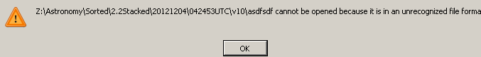
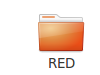
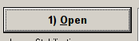
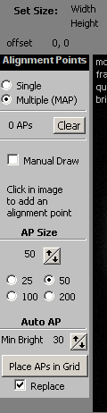
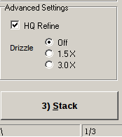

myScriptPath = "/home/miphilli/Documents/Dropbox/5-Permanent/Sikuli/Linux/Astro/Planetary/v10" if not myScriptPath in sys.path: sys.path.append(myScriptPath) from sikuli.Sikuli import * import subprocess, sys, os, os.path, shutil, collections, pickle, string, datetime, time, fnmatch from collections import defaultdict from datetime import datetime as dt from datetime import date setAutoWaitTimeout(1200) myScriptPath = "/home/miphilli/Dropbox/5-Permanent/Sikuli/Linux/Astro/Planetary/v10" if not myScriptPath in sys.path: sys.path.append(myScriptPath) # Major rework on 20111128 # # Define STATIC variables # # Major rework 20121022 - Functions, CPU watch and loaddict # Major rework 20121105 - Exceptions, load dict from os.listdir for real caps fileloaderror =  #wait1("JBufferingan.png") #wait2("1355554016019.png") CMD = "top -b -n 10 | gawk '/AutoStakkert/ {print $9}'" test = True cpuMax = 10 def AS2CPU(): while True: RegistaxCPU = os.popen(CMD).readlines() cpu = float(RegistaxCPU[0]) if test: print cpu if cpu < cpuMax : break sleep(5) print(RegistaxCPU) def AS2(DATE, TIME): switchApp("AutoStakkert") run("killall nautilus") sleep(15) run("nautilus "+SORTED+"/"+DATE+"/" + TIME + " --geometry=1600x475+76+575") sleep(2) switchApp(TIME) sleep(2) type("a",KEY_CTRL) sleep(2) click(Pattern().similar(0.52)) switchApp(TIME) sleep(2) type("a",KEY_CTRL) sleep(2) dragDrop(Pattern().similar(0.52), Pattern().similar(0.50)) # SINGLE & RGB? # dragDrop(Pattern("1350914667319.png").similar(0.77),Pattern("3tackIREDFit.png").similar(0.55).targetOffset(6,60)) # dragDrop(Pattern("1350914667319.png").similar(0.39), Pattern("1Open.png").similar(0.52)) #BEST RGB # hover(Pattern("1350914667319.png").similar(0.49)) # drag(getLastMatch) # dropAt(Pattern("1Open.png").similar(0.52), 2) sleep(10) os.system("killall nautilus") switchApp("AutoStakkert") sleep(0.5) click(Pattern().targetOffset(20,-91)) sleep(2) click(Pattern().targetOffset(-9,180)) sleep(2) click(Pattern().targetOffset(-17,-22)) sleep(2) click(Pattern().targetOffset(-8,52)) AS2CPU() wait(Pattern().similar(0.77)) AS2CPU() wait(Pattern().similar(0.77)) AS2CPU() #Read most recent DATE and times within SORTED = '/Astronomy/Sorted/2.1-FilterSorted/' DATES = os.listdir(SORTED) DATE = sorted(DATES)[-1] DATEfolder=os.path.join(SORTED, DATE) TIMES = sorted(os.listdir(DATEfolder)) #Set expiration for 60 days from time of script execution days45=datetime.timedelta(days=45) today = date.today() expDATE=str(today+days45) #Archive var section dirincludes = 'AS_' staleraws = '/Astronomy/Temp/Corianders-Expiring--'+expDATE stackroot = '/Astronomy/Sorted/2.2Stacked' DropboxCopy = '/home/miphilli/Dropbox/4-Temp/AstroStacks' #BODY OF LOOP #Verify cleanup of workspace os.popen("killall workrave") os.popen("killall cairo-dock") os.popen("killall AutoStakkert.exe") os.popen("killall nautilus") os.popen("/home/miphilli/Documents/Dropbox/5-Permanent/Astronomy/Software/AutoStakkert/AutoStakkert.exe&") print "Found "+str(TIMES) for TIME in sorted(TIMES): AS2(DATE, TIME) os.system("/home/miphilli/Dropbox/5-Permanent/Scripts/Astronomy/Planetary/v10BETA/StackMover.py")